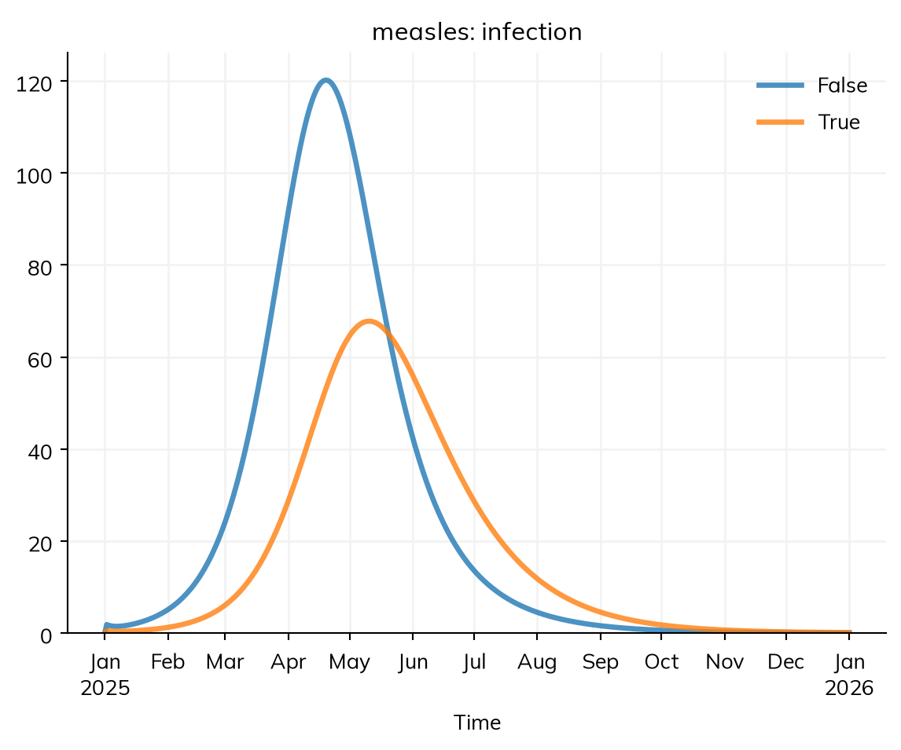
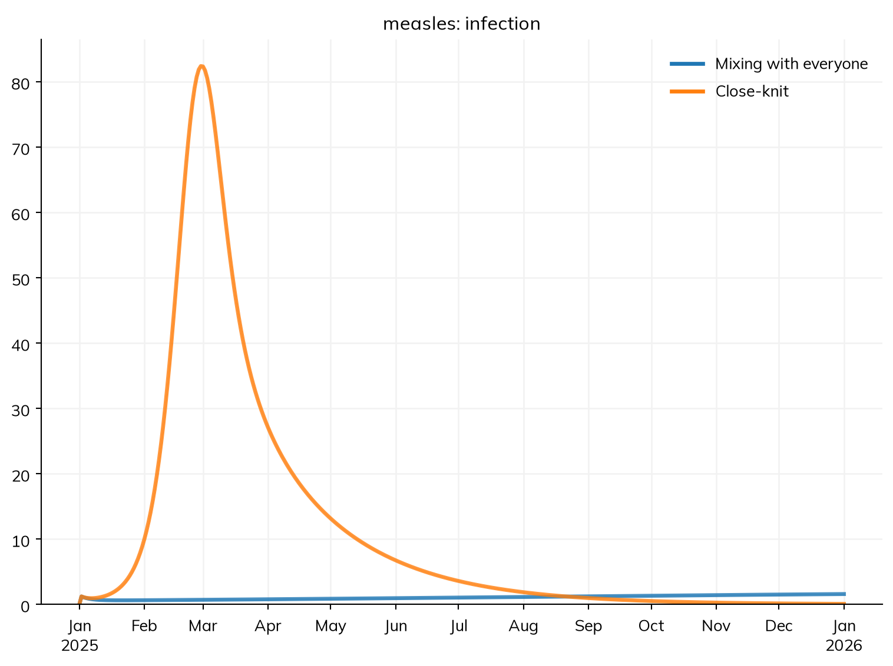
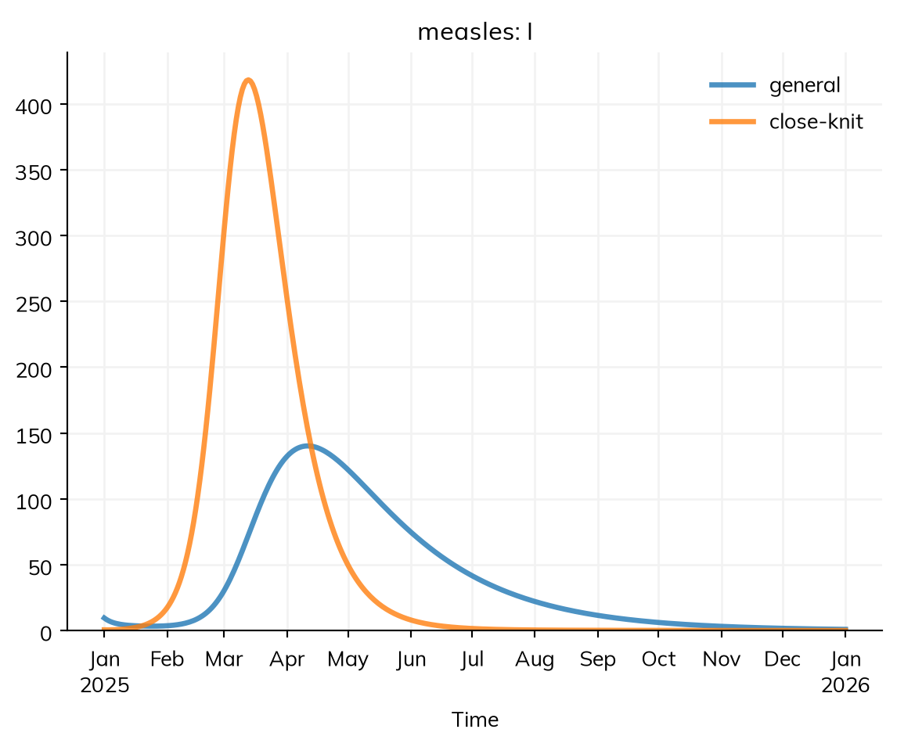
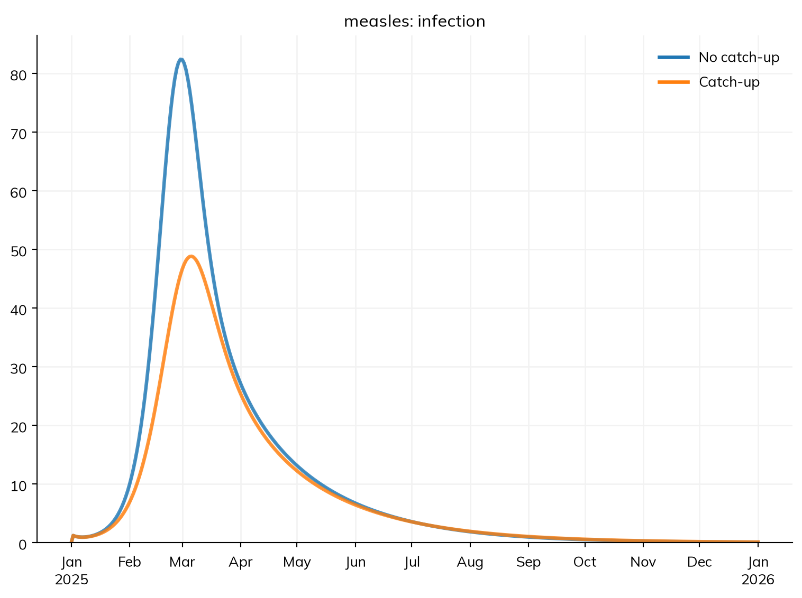
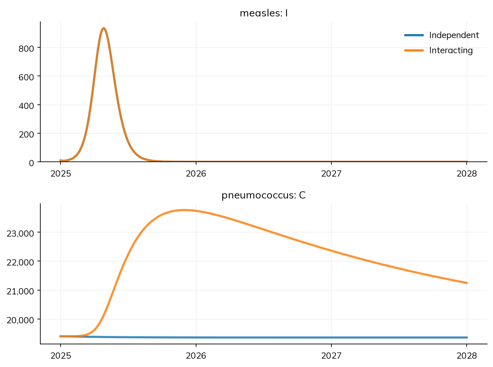

import starsim as ss
def make_measles():
""" The SEIR model of measles, by age, with nobody immune yet """
S, E, I, R = ss.states('S E I R')
infection = S >> E @ 0.14*I # β = 0.14 per contact per day
progression = E >> I @ ss.days(10) # Latent for 10 days on average
recovery = I >> R @ ss.days(8) # Infectious for 8 days on average
measles = ss.Disease(infection, progression, recovery, init_n=dict(I=10), name='measles')
measles.stratify(age={0: 0.3, 15: 0.6, 65: 0.1}) # Ages 0-14, 15-64, and 65+
return measles
age_contacts = [[10, 6, 1], [3, 8, 1], [3, 6, 3]] # Contacts a day, between age groups
settings = dict(total_pop=100_000, start='2025-01-01', stop='2026-01-01')T8 – Stratification and co-transmission
Who is the outbreak in, and does it make other infections worse?
T4 split the measles model into age groups. Age is rarely the only way in which people differ that matters for an outbreak. Whether someone is vaccinated decides whether they can be infected, and whom they mix with decides whom they can infect. Measles outbreaks in countries with high vaccination coverage happen mostly in communities where coverage is low, and spread from there. And measles doesn’t only harm people while they have it: for a few years afterwards, it leaves them more vulnerable to other infections.
This tutorial has two halves. The first stratifies the measles model by more than age: by vaccination status, and by membership of a close-knit community with low coverage. The second runs measles together with a second disease, with an interaction between them. By the end, you will be able to:
- stratify a model by several dimensions, and give shares that differ by another dimension;
- stratify only part of a model, and say why that is worth doing;
- give the contacts between groups of two dimensions at once;
- move people between groups at a rate, with
ss.transfer(); - run two diseases in one model, link them with
ss.modify(), and say what tracking them jointly means.
The model so far
This is the measles model from T5 – Interventions and scenarios: an SEIR model in a town of 100,000 people in three age groups, who mix according to a contact matrix, with 10 people infectious on 1 January. In T5, the people already immune started in R; here, their immunity comes from vaccination, which is added below as a dimension of its own. Since each section stratifies the model in a different way, the model is made by a function, so that each section can start from a new copy:
Vaccination status as a dimension
In most places, most people are vaccinated against measles, and two doses of the vaccine protect about 97% of people. One way to model this is to stratify by vaccination status: everyone is either vaccinated or not, and the vaccinated are 97% less susceptible. T5 modeled vaccination as an intervention, given on a date; a dimension is the natural way to give the immunity that a population already has when the model starts, and it lets the results be read for the vaccinated and the unvaccinated separately.
Coverage often differs by age. Here 85% of children are vaccinated, 92% of adults aged 15 to 64, and 95% of people 65 and over. A share that differs by another dimension is given as an ss.by() over both: a row for each age group, and a column for each level of vaccination, each row adding up to 1. So each age group keeps its size, and the rows say how it is split:
coverage_by_age = ss.by([[0.15, 0.85], # 0-14: 15% unvaccinated, 85% vaccinated
[0.08, 0.92], # 15-64
[0.05, 0.95]], # 65+
dims=['age', 'vaccinated'])
measles = make_measles()
measles.stratify(vaccinated=[False, True], split=coverage_by_age, states=['S'], adjust={'rel_sus': [1, 0.03]})
sim = ss.Sim(measles, networks=ss.contacts(ages=[0, 15, 65], matrix=age_contacts), **settings)
sim.run()
sim.results.measles.infection.by('vaccinated').plot()Sim: measles, 100,000 people, as an ODE, 2025-01-01 to 2026-01-01
measles: R0 = 2.34, with 10 infectious at the start
Note: people do not age between the age groups, since nobody is born or dies; pass use_aging=True to age them
Done in 0.0035 s; measles: 15,155 infections; at most 1,301 infectious, on 2025-05-12
adjust multiplies a quantity in each level: rel_sus, the relative susceptibility, is 1 for the unvaccinated and 0.03 for the vaccinated. The run prints an R0 of about 2.3, rather than 16: since vaccination is a dimension of the model, the vaccinated are part of the population that this R0 is worked out for, and most of them are protected. The outbreak is much smaller than with nobody immune:
res = sim.results.measles
print('Infections:', round(res.infection.sum()))
print('Among the vaccinated:', round(res.infection.select(vaccinated=True).sum()))
print('Among unvaccinated children:', round(res.infection.select(vaccinated=False, age='0-14').sum()))Infections: 15155
Among the vaccinated: 6242
Among unvaccinated children: 4362Even with a vaccine that protects 97% of people, about two in five of the people infected are vaccinated, because there are so many more of them than of the unvaccinated. This is a common finding in real outbreaks, and doesn’t mean that the vaccine is failing: each vaccinated person is still far less likely to be infected than each unvaccinated one.
states=['S'] stratifies only the susceptible state by vaccination. This is partial stratification: vaccination matters only for whether someone is infected, and once they are, a vaccinated person is in this model the same as anyone else, so people infected from S enter E with no level of vaccination. Splitting E, I, and R as well would add compartments that behave the same. With states=['S'], the model has 3 × 2 = 6 compartments for S, and 3 each for E, I, and R. Results by a dimension count only the states that have it, so res.I.by('vaccinated') raises an error here, since I has no level of vaccination; the flow out of S, res.infection.by('vaccinated'), says who was infected. A dimension that people mix by (with a contact matrix) can’t be partial, since everyone who can infect or be infected needs a level of it to mix as. See Stratification for this and for where=, which narrows a dimension to some groups rather than some states (e.g. pregnancy, for women only).
An under-vaccinated community
Overall coverage says little about an outbreak if the unvaccinated are clustered together. Suppose that 5% of the town’s people belong to a close-knit community in which only 60% are vaccinated (for simplicity, at every age), while 98% of everyone else is. Overall, 96% of the town is vaccinated, and about 93% protected, close to the 94% that would prevent an outbreak (the herd immunity threshold, 1 − 1/16). The community’s members make 70% of their contacts with each other, at school, at church, and at home, and 30% with the rest of the town. This is a third dimension, community, with a share of the population in each level, as for age, and coverage by community is an ss.by() over community and vaccination, as above:
coverage_by_community = ss.by([[0.02, 0.98], # General: 2% unvaccinated, 98% vaccinated
[0.40, 0.60]], # Close-knit community
dims=['community', 'vaccinated'])
def make_community_measles():
""" The measles model, by age, community, and vaccination """
measles = make_measles()
measles.stratify(community={'general': 0.95, 'close-knit': 0.05})
measles.stratify(vaccinated=[False, True], split=coverage_by_community, states=['S'], adjust={'rel_sus': [1, 0.03]})
return measlesThe contacts are now between groups of two dimensions. With a matrix for each, the contacts between two groups are the product of the entries for each: a child in the community has 10 contacts a day with children, and 70% of a community member’s contacts are within the community, so 7 of them are with children in the community. The rest of the town makes 1.6% of its contacts with the community. (The two are consistent: there are 19 times as many people outside the community, so the total contacts each way are the same: 0.95 × 0.016 ≈ 0.05 × 0.3.)
To see what the clustering does, compare it with the same people mixing as if the community weren’t close-knit, so that everyone makes 5% of their contacts with its members, its share of the town. The coverage of each group, and so of the town as a whole, is the same in both:
clustered = ss.contacts(dict(age=age_contacts, community=[[0.984, 0.016], [0.3, 0.7]]), ages=[0, 15, 65])
mixed = ss.contacts(dict(age=age_contacts, community=[[0.95, 0.05], [0.95, 0.05]]), ages=[0, 15, 65])
sims = {
'Mixing with everyone': ss.Sim(make_community_measles(), networks=mixed, **settings),
'Close-knit': ss.Sim(make_community_measles(), networks=clustered, **settings),
}
msim = ss.parallel(sims)
msim.plot('measles.infection')MultiSim: 2 runs of 2 scenarios (Mixing with everyone, Close-knit)
Done in 0.3 s
The coverage is the same in both, but the outbreaks are not. Mixed with everyone, each unvaccinated person in the community is surrounded mostly by vaccinated people, and transmission barely sustains itself: the outbreak smolders, growing slowly all year. Clustered together, the community has a reproduction number of about 16 × (0.4 + 0.6 × 0.03) ≈ 7 within itself, against about 16 × (0.02 + 0.98 × 0.03) ≈ 0.8 in the rest of the town, too low to sustain an outbreak on its own. So the community has an explosive outbreak within weeks, which spills over into the rest of the town. select() picks out any combination of groups, leaving the dimensions not named summed over:
for sim in msim.sims:
res = sim.results.measles
print(sim.label, '- in the community:', round(res.infection.select(community='close-knit').sum()), '- elsewhere:', round(res.infection.select(community='general').sum()))
sim = msim.sims['Close-knit']
sim.results.measles.I.by('community').plot()Mixing with everyone - in the community: 118 - elsewhere: 269
Close-knit - in the community: 2420 - elsewhere: 1720
With the clustering, there are about ten times as many infections in the year, and the community, 5% of the town, has more than half of them. Its outbreak peaks first; the rest of the town’s follows, fed by the contacts between them, and lasts longer, since without the community’s cases it would die out. A model that averaged coverage over the town would miss all of this, and with it where vaccination would do the most good.
Moving between groups
So far, nobody changes group: each person stays in their community and their vaccination status, and (with no births or deaths) in their age group. ss.transfer() moves people from one level of a dimension to another at a rate, without changing their disease state. Suppose an outreach program offers catch-up vaccination to unvaccinated people in the community, reaching them at a rate of 2 a year (so that about 85% of them are reached within a year, if the outbreak doesn’t reach them first). ss.transfer(vaccinated=True, rate=...) moves people to the level True from any other, here at a rate that is given for each community, and is 0 outside the community. A transfer belongs to the dimension it moves people along, so it is given to that dimension’s stratify() call, by name:
catchup = ss.transfer(vaccinated=True, rate=ss.peryear(ss.by(community=[0, 2])), states=['S'])
measles = make_measles()
measles.stratify(community={'general': 0.95, 'close-knit': 0.05})
measles.stratify(vaccinated=[False, True], split=coverage_by_community, states=['S'], adjust={'rel_sus': [1, 0.03]}, catchup=catchup)
sims = {
'No catch-up': msim.sims['Close-knit'],
'Catch-up': ss.Sim(measles, networks=clustered, **settings),
}
msim = ss.parallel(sims)
msim.plot('measles.infection')MultiSim: 2 runs of 2 scenarios (No catch-up, Catch-up)
Done in 1.9 s
res = msim.sims['Catch-up'].results.measles
print('Doses given:', round(res.catchup.sum()))
msim.summarize().loc['measles_infection']Doses given: 605| value | |
|---|---|
| scenario | |
| No catch-up | 4139.959253 |
| Catch-up | 3124.760506 |
A transfer is a transition, so it has a result of its own, by its name (catchup), and can be changed by an intervention like any other. About 600 doses prevent about 1,000 infections, nearly two for each dose, since each is given where the outbreak is. (Exercise 2 asks what the same doses would do given to the rest of the town.) Three kinds of movement between groups are easy to confuse:
| Movement | What it is | How it is given |
|---|---|---|
| A transfer | People move steadily, at a rate (catch-up or routine vaccination, migration, a change of risk group) | ss.transfer(), in stratify() |
| A delivery | People move at given times, with a coverage (a vaccination campaign) | ss.vaccinate() or ss.Delivery(move=...), as an intervention (T5) |
| Aging | People move up the age groups as they get older | Automatic, when people are born or die |
As compartments, each state has a compartment for each combination of levels, so the dimensions multiply: here S has 3 age groups × 2 communities × 2 levels of vaccination = 12 compartments, and E, I, and R have 6 each. Sixteen age groups, five communities, and two levels of vaccination in every state would be 640. Large models still run quickly, but are hard to check; sim.describe() lists each dimension, its levels, the states it applies to, and its adjustments. Every stratification works the same way when the model is run as agents (see A1 – Diseases): each agent then has a value of each dimension, the transfers change those values, and the results are counted by group in the same way.
A second disease
Measles damages the immune system’s memory of other infections. For two to three years after recovering, children who have had measles are more likely to fall ill and die from other infections, and in places where measles was common, a large share of all childhood deaths from infection have been put down to this “immune amnesia”. So a measles outbreak leaves a wake of other infections, and preventing it prevents them too. To model this, the model needs a second disease, and the two need to interact.
The second disease here is pneumococcus, a bacterium that many children carry in the nose and throat for a few weeks at a time, usually without harm, and that is a leading cause of pneumonia. It is modeled as an SIS model: people acquire it (S to C, for carrying) through contact with carriers, and clear it after a month on average, after which they can acquire it again. With these values, about a quarter of children and a sixth of adults carry it at any time, about as it would settle on its own, so it starts there.
Measles needs one new state: to know who is affected by immune amnesia, the model has to remember who has had measles recently. In a compartmental model, what a person has been through has to be a state, so recovery from measles now leads to A (recovered, with amnesia), and people leave A for R after two years on average. Both are immune to measles; they differ only in their effect on the other disease. Since the model now has durations in years as well as in days, unit='day' says that the bare numbers (the values of β) are per day. The run is three years long, so that the wake can be seen, and goes back to the model of T5, with immunity in R by age. The diagram (T3) shows the new state:
ages = {0: 0.3, 15: 0.6, 65: 0.1}
contacts = ss.contacts(ages=[0, 15, 65], matrix=age_contacts)
settings = dict(networks=contacts, total_pop=100_000, start='2025-01-01', stop='2028-01-01', unit='day')
S, E, I, A, R = ss.states('S E I A R')
infection = S >> E @ 0.14*I
progression = E >> I @ ss.days(10)
recovery = I >> A @ ss.days(8) # Recovered, with immune amnesia
restored = A >> R @ ss.years(2) # Immune memory of other infections restored after 2 years on average
measles = ss.Disease(infection, progression, recovery, restored,
init = dict(R=ss.by(age=[0.8, 0.92, 0.98])), # The share immune in each age group
init_n = dict(I=10),
name = 'measles',
)
measles.stratify(age=ages)
S, C = ss.states('S C')
acquisition = S >> C @ 0.003*C # Acquired through contact with carriers
clearance = C >> S @ ss.days(30) # Carried for a month on average
pneumococcus = ss.Disease(acquisition, clearance,
init = dict(C=ss.by(age=[0.25, 0.17, 0.17])), # The share carrying it in each age group
name = 'pneumococcus',
)
pneumococcus.stratify(age=ages)
measles.diagram()flowchart LR
S(["S"])
E(["E"])
I(["I"])
A(["A"])
R(["R"])
S -.->|"infection: 0.14 × I"| E
E -->|"progression: 10 days"| I
I -->|"recovery: 8 days"| A
A -->|"restored: 2 years"| Rflowchart LR
S(["S"])
E(["E"])
I(["I"])
A(["A"])
R(["R"])
S -.->|"infection: 0.14 × I"| E
E -->|"progression: 10 days"| I
I -->|"recovery: 8 days"| A
A -->|"restored: 2 years"| R
An interaction
ss.modify() changes a quantity for the people a condition selects. Each disease has a relative susceptibility (rel_sus, how likely each person is to be infected, compared with others) and a relative transmissibility (rel_trans, how likely each person is to infect others), both 1 to begin with, so an interaction between two diseases is a change to one of these, for the people in some state of the other. Here, while people have measles and for as long as they have amnesia, they are twice as likely to acquire pneumococcus (an illustrative value):
amnesia = ss.modify(pneumococcus.rel_sus, multiply=2, where=measles.I | measles.A)It reads as a sentence: for people infectious with measles or recovered with amnesia (where=measles.I | measles.A), multiply their susceptibility to pneumococcus by 2. The condition is evaluated as the sim runs, so it applies to people while they are in those states, and stops when they reach R; a modifier never overwrites the quantity it changes, so nothing has to be restored. Interactions that are part of the biology are given to the sim as connectors= (an intervention would go in interventions=; the two differ only in when they act in each step). To see what the interaction does, run the two diseases with and without it:
sims = {
'Independent': ss.Sim([measles, pneumococcus], **settings),
'Interacting': ss.Sim([measles, pneumococcus], connectors=amnesia, **settings),
}
msim = ss.parallel(sims)
msim.plot(['measles.I', 'pneumococcus.C'])MultiSim: 2 runs of 2 scenarios (Independent, Interacting)
Done in 0.76 s
msim.summarize().loc['pneumococcus_acquisition']| value | |
|---|---|
| scenario | |
| Independent | 706696.485662 |
| Interacting | 812411.679520 |
The measles outbreak is the same in both, since pneumococcus doesn’t affect it. Without the interaction, pneumococcus carries on at its usual level. With it, the number of carriers rises by about a fifth over the year of the outbreak, and stays high for years after measles has gone, as the people with amnesia slowly recover their immunity. The effect is larger than the 9% of people who had measles would suggest: they carry pneumococcus more often, and so pass it to more people, including people who never had measles. Since a share of carriers develop pneumonia, a measles outbreak would cause more pneumonia for years after it.
Diseases tracked jointly
To work out the rate at which carriers infect people, a compartmental model of pneumococcus alone needs only the number of carriers. But with the interaction, it needs to know how many of the susceptible people have measles amnesia, which a separate set of compartments for each disease can’t say. So Starsim tracks linked diseases jointly: it makes a compartment for each combination of their states (S for measles and S for pneumococcus, A and C, and so on), and each disease’s transitions move people between the combinations. describe() shows how:
sim = msim.sims['Interacting']
sim.describe()Sim 3 modules, 100,000 people, 2025-01-01 to 2028-01-01
| solver | ode | guessed: every part of the model has a compartmental form |
| unit | day | |
| dimension | age (age): 0-14, 15-64, 65+; people do not age (use_aging=False) | guessed: no aging, since nobody is born or dies |
| split: 0-14 0.3, 15-64 0.6, 65+ 0.1 | ||
| dimension | measles (disease): S, E, I, A, R; applies to the people of pneumococcus | |
| split: S 1, E 0, I 0, A 0, R 0 | ||
| dimension | pneumococcus (disease): S, C; applies to the people of measles | |
| split: S 1, C 0 | ||
| jointly | measles × pneumococcus: 5 × 2 = 10 joint states of people | "amnesia" acts on pneumococcus by a state of measles |
| 10 compartments in each of 3 groups (30 in all), within ss.options.max_joint (10,000) | ||
| a whole run takes about 4.8 MB for its rates and its results by group | ||
| assumed: the diseases start independent of each other (the share in each state of one is the same in every state of the others), and step together, at one timestep |
Disease 'measles' 5 states, 4 transitions
| states | S, E, I, A, R | |
| I infectious | ||
| init: R = by(age=[0.8, 0.92, 0.98]), I = 10 people; the rest in S | ||
| infection | S -> E transmission, from I | |
| beta = 0.14 per day | ||
| rate = 0.14 × I | exposure through the contact matrices | |
| beta on contacts: 0.14 per day per contact | ||
| progression | E -> I spontaneous | |
| time in E ~ exponential(mean = 10 days) | guessed: scalar duration | |
| recovery | I -> A spontaneous | |
| time in I ~ exponential(mean = 8 days) | guessed: scalar duration | |
| restored | A -> R spontaneous | |
| time in A ~ exponential(mean = 2 years) | guessed: scalar duration |
Disease 'pneumococcus' 2 states, 2 transitions
| states | S, C | |
| C infectious | ||
| init: C = by(age=[0.25, 0.17, 0.17]); the rest in S | ||
| acquisition | S -> C transmission, from C | |
| beta = 0.003 per day | ||
| rate = 0.003 × C | exposure through the contact matrices | |
| beta on contacts: 0.003 per day per contact | ||
| clearance | C -> S spontaneous | |
| time in C ~ exponential(mean = 30 days) | guessed: scalar duration |
Mixing and interventions
| mixing | contacts (MixingPools): contact matrix by age | |
| modifier | pneumococcus.rel_sus: amnesia multiply=2 where=(measles.I | measles.A) |
Results and running
| results | S, E, I, A, R, and one flow per transition | |
| results | S, C, and one flow per transition | |
| schedule | every day: amnesia, measles, pneumococcus |
Notes
| note | the states of measles × pneumococcus are tracked jointly: 5 × 2 = 10 joint states per group ("amnesia" acts on pneumococcus by a state of measles) | |
| note | people do not age between the age groups, since nobody is born or dies; pass use_aging=True to age them |
Its “jointly” line says that measles and pneumococcus are tracked as 5 × 2 = 10 joint states in each age group, and why: the modifier acts on pneumococcus by a state of measles. It also says what is assumed at the start: that the two infections are independent of each other, so that the share carrying pneumococcus is the same whatever someone’s measles state. The number of joint states is the product of the diseases’ numbers of states, so it grows quickly; Starsim tracks diseases jointly up to a limit (ss.options.max_joint, 10,000 compartments by default), and above it a model run with the default solver runs as agents, in which each agent simply has a state in each disease. Diseases that don’t refer to each other’s states are not tracked jointly, so linking only the diseases that do interact keeps a model small. Connectors covers modifiers in full, including interactions that change transmission or the course of a disease, and connectors written as code.
Exercises
- In the community model, raise coverage in the community from 60% to 80%. How many fewer infections are there in the rest of the town, where coverage hasn’t changed? Why?
- Give the same number of catch-up doses (about 600) to unvaccinated people outside the community instead, using a transfer whose rate is 0 in the community. How many infections do they prevent, compared with the doses given in the community?
- In the model with two diseases, add a vaccination campaign against measles in children on 1 February (
ss.vaccinate(efficacy=0.93, where=measles.age < 15, coverage=0.8, at='2025-02-01')); with two diseases in the sim, the vaccine is for the one whose age groupswhere=names (measles.age), anddisease=says which one if it names none (e.g.where=ss.ppl.age < 15). How many pneumococcus acquisitions does it prevent over the three years, with and without the interaction? What does this mean for working out the benefit of measles vaccination?
Further reading
- Glasser et al. (2016): The effect of heterogeneity in uptake of the measles, mumps, and rubella vaccine on the potential for outbreaks of measles: a modeling study of how clustering of the unvaccinated raises the risk of measles outbreaks
- Mina et al. (2015): Long-term measles-induced immunomodulation increases overall childhood infectious disease mortality: the evidence for measles immune amnesia
- EpiModel Gallery: RSV (age-stratified, multilayer): an age-stratified network model with vaccination of older adults
- EpiModel Gallery: Competing strains: two pathogens spreading in the same population